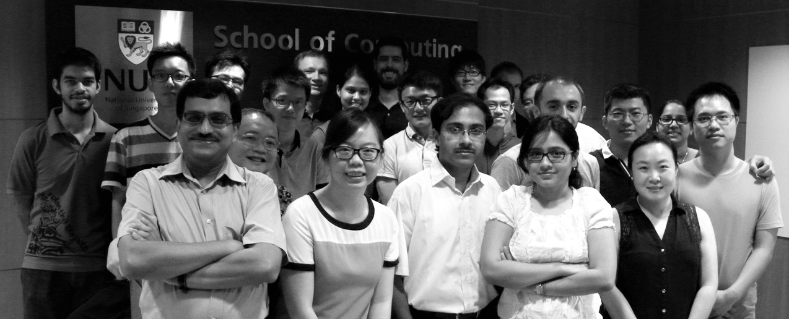

With research group members - 2012.
|
|
|
[MAIN PAGE] [TEACHING] [STUDENTS] [TOOLS] [SERVICE]
Research Themes
Funded Projects
National Satellite of Excellence in Trustworthy Software Systems (Lead PI and Director), $12M, 2019-23.
TSUNAMi: Trustworthy systems from un-trusted components (Lead PI), $6.1M, 2015-20.
funded by National Research Foundation (NRF), project is close to completion.
Energy aware programming, Principal Investigator (PI), $373K, 2014-17,
funded by Ministry of Education, 2014-17.
CoDeTest: Comprehension, Detection and testing via Symbolic Execution, PI, $390K
funded by DSO Labs, 2013-16.

TSUNAMi project group-photo 2015
Last updated 2019.